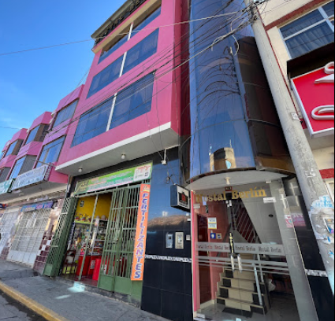

OPCIONES DE HOSPEDAJE
Precio promedio - Hotel 3 estrellas: S/. 100.00 (por noche)
Casa Hospedaje Muskuy: S/. 40.00 (por noche)

Precio promedio - Hotel 3 estrellas: S/. 100.00 (por noche)
Casa Hospedaje Muskuy: S/. 40.00 (por noche)